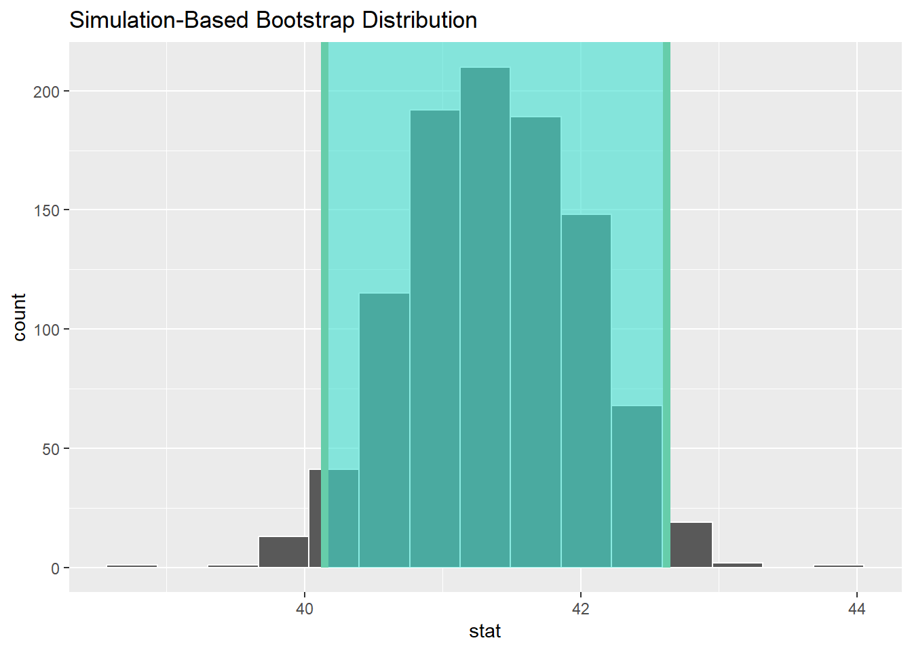
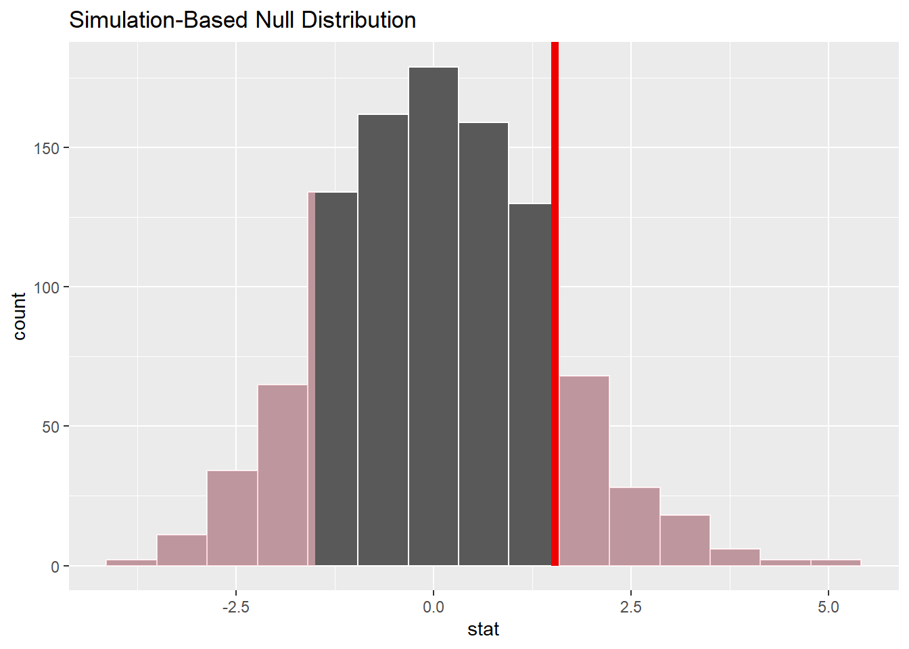
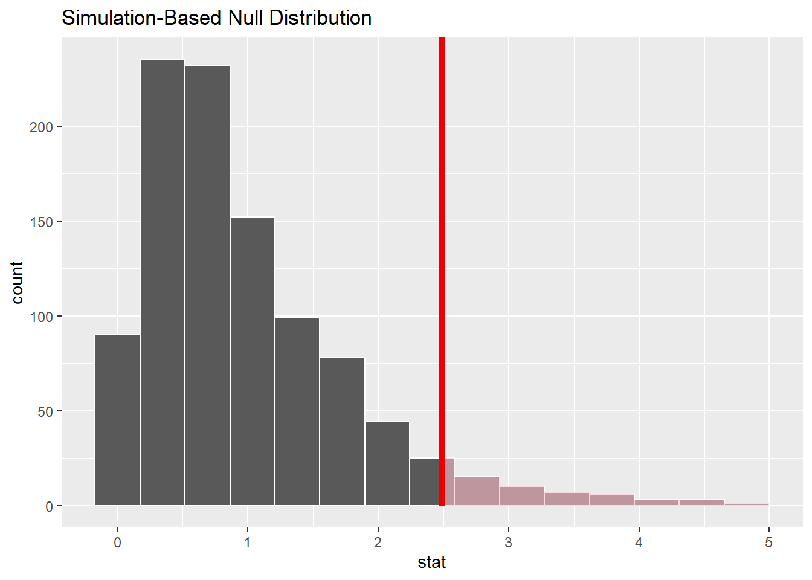

library(tidyverse)
library(infer) # ou library(tidymodels)Lab11 - Statistiques inférentielles
Introduction
Les exemples présentés dans ce lab sont basés la documentation du package infer.
L’objectif de ce lab est de vous familiariser avec les concepts de base des statistiques inférentielles en R. Pour cela, nous allons apprendre à utiliser le package infer pour effectuer des tests d’hypothèses et des intervalles de confiance. infer est intégré dans le tidyverse et permet de faire des inférences statistiques de manière simple et intuitive. Il est automatiquement chargé lorsque vous chargez tidymodels.
infer utilise une grammaire expressive pour effectuer des inférences statistiques qui s’intègre dans le tidyverse. Au lieu de fournir des méthodes pour des tests statistiques spécifiques, ce package consolide les principes partagés entre les tests d’hypothèses courants en un ensemble de 4 verbes principaux (fonctions), complétés par de nombreuses utilités pour visualiser et extraire les valeurs pertinentes.
Peu importe l’hypothèse que nous testons, nous posons toujours la même question : l’effet/la différence dans nos données observées est-il réel ou dû au hasard ? Pour répondre à cette question, nous commençons par supposer que les données observées proviennent d’un monde où “rien ne se passe” (c’est-à-dire que l’effet observé est simplement dû au hasard), et appelons cette hypothèse notre hypothèse nulle (En réalité, nous pourrions ne pas croire en l’hypothèse nulle du tout - l’hypothèse nulle s’oppose à l’hypothèse alternative, qui suppose que l’effet présent dans les données observées est en fait dû au fait que “quelque chose se passe”). Nous calculons ensuite une statistique de test à partir de nos données qui décrit l’effet observé. Nous pouvons utiliser cette statistique de test pour calculer une valeur \(p\), donnant la probabilité que nos données observées puissent se produire si l’hypothèse nulle était vraie. Si cette probabilité est inférieure à un niveau de signification \(\alpha\) prédéfini, alors nous pouvons rejeter notre hypothèse nulle.
Le package fonctionne autour de 4 verbes principaux :
specify(): permet de spécifier la variable ou la relation entre les variables que vous souhaitez étudier.hypothesize(): permet de déclarer l’hypothèse nulle.generate(): permet de générer des données reflétant l’hypothèse nulle.calculate(): permet de calculer une distribution de statistiques à partir des données générées pour former la distribution nulle.
Packages
Nous aurons besoin des packages suivants pour ce lab :
Données
Pour ce lab, nous allons utiliser le jeu de données gss du package infer. Ce jeu de données contient des données de l’enquête General Social Survey (GSS) menée aux États-Unis. Les données sont stockées dans un tibble appelé gss. Voici un aperçu des premières lignes du jeu de données :
glimpse(gss)Rows: 500
Columns: 11
$ year <dbl> 2014, 1994, 1998, 1996, 1994, 1996, 1990, 2016, 2000, 1998, 20…
$ age <dbl> 36, 34, 24, 42, 31, 32, 48, 36, 30, 33, 21, 30, 38, 49, 25, 56…
$ sex <fct> male, female, male, male, male, female, female, female, female…
$ college <fct> degree, no degree, degree, no degree, degree, no degree, no de…
$ partyid <fct> ind, rep, ind, ind, rep, rep, dem, ind, rep, dem, dem, ind, de…
$ hompop <dbl> 3, 4, 1, 4, 2, 4, 2, 1, 5, 2, 4, 3, 4, 4, 2, 2, 3, 2, 1, 2, 5,…
$ hours <dbl> 50, 31, 40, 40, 40, 53, 32, 20, 40, 40, 23, 52, 38, 72, 48, 40…
$ income <ord> $25000 or more, $20000 - 24999, $25000 or more, $25000 or more…
$ class <fct> middle class, working class, working class, working class, mid…
$ finrela <fct> below average, below average, below average, above average, ab…
$ weight <dbl> 0.8960034, 1.0825000, 0.5501000, 1.0864000, 1.0825000, 1.08640…Test d’hypothèses - Une variable numérique
Nous allons commencer par un test d’hypothèses sur une variable numérique. Supposons que nous voulons tester si le temps de travail hebdomadaire est égal à 40 heures en moyenne. Pour cela, nous allons effectuer un test d’hypothèses.
Nous allons commencer par spécifier la variable que nous voulons étudier. Pour cela nous pouvons utiliser la fonction specify(). Nous allons spécifier la variable hours qui représente le temps de travail hebdomadaire.
gss %>%
specify(response = age)Response: age (numeric)
# A tibble: 500 × 1
age
<dbl>
1 36
2 34
3 24
4 42
5 31
6 32
7 48
8 36
9 30
10 33
# ℹ 490 more rowsNous allons ensuite déclarer notre hypothèse nulle, qui est que le temps de travail hebdomadaire est égal à 40 heures en moyenne. Pour cela, nous utilisons la fonction hypothesize(). Le paramètre null permet de spécifier le type d’hypothèse nulle que nous voulons tester. Dans notre cas, nous allons tester une hypothèse nulle de type “point” avec une moyenne de 40 heures.
gss %>%
specify(response = hours) %>%
hypothesize(null = "point", mu = 40)Response: hours (numeric)
Null Hypothesis: point
# A tibble: 500 × 1
hours
<dbl>
1 50
2 31
3 40
4 40
5 40
6 53
7 32
8 20
9 40
10 40
# ℹ 490 more rowsEnfin, nous allons générer des données reflétant cette hypothèse nulle et calculer une distribution de statistiques à partir de ces données. Pour cela, nous utilisons les fonctions generate() et calculate().
generate() permet de générer des données reflétant l’hypothèse nulle. Le paramètre reps permet de spécifier le nombre de répétitions à effectuer. Plus le nombre de répétitions est élevé, plus la distribution de statistiques sera précise. Le paramètre type permet de spécifier le type de distribution à générer. Dans notre cas, nous allons générer une distribution de type “bootstrap”.
gss %>%
specify(response = hours) %>%
hypothesize(null = "point", mu = 40) %>%
generate(reps = 1000, type = "bootstrap")Response: hours (numeric)
Null Hypothesis: point
# A tibble: 500,000 × 2
# Groups: replicate [1,000]
replicate hours
<int> <dbl>
1 1 87.6
2 1 46.6
3 1 38.6
4 1 48.6
5 1 48.6
6 1 70.6
7 1 38.6
8 1 42.6
9 1 58.6
10 1 48.6
# ℹ 499,990 more rowsSi vous regardez le résultat de cette fonction, vous verrez un tableau 500000 x 2. Chaque paquet de 500 lignes représente une répétition de l’échantillonnage bootstrap. La première colonne est l’index de l’échantillon bootstrap, et la deuxième colonne est la valeur calculée pour cet échantillon.
Enfin, nous allons calculer la distribution de statistiques à partir des données générées. Pour cela, nous utilisons la fonction calculate().
gss %>%
specify(response = hours) %>%
hypothesize(null = "point", mu = 40) %>%
generate(reps = 1000, type = "bootstrap") %>%
calculate(stat = "mean")Response: hours (numeric)
Null Hypothesis: point
# A tibble: 1,000 × 2
replicate stat
<int> <dbl>
1 1 41.1
2 2 40.9
3 3 41.0
4 4 40.7
5 5 40.2
6 6 40.4
7 7 39.6
8 8 40.2
9 9 39.0
10 10 40.6
# ℹ 990 more rowsCette fois, nous obtenons un tableau 1000 x 2. Chaque ligne représente une répétition de l’échantillonnage bootstrap, et la deuxième colonne est la statistique calculée pour cet échantillon, ici la moyenne.
Nous pouvons maintenant visualiser la distribution de statistiques génér et calculées. Pour cela, nous utilisons la fonction visualize().
null_dist <- gss %>%
specify(response = hours) %>%
hypothesize(null = "point", mu = 40) %>%
generate(reps = 1000, type = "bootstrap") %>%
calculate(stat = "mean")
null_dist %>%
visualize()Nous voudrions maintenant voir où se situe notre statistique de test par rapport à la distribution nulle. Pour commencer, nous allons calculer la statistique observée à partir de nos données. Pour cela, nous utilisons la fonction calculate() avec le paramètre stat = "mean".
obs_mean <- gss %>%
specify(response = hours) %>%
calculate(stat = "mean")Nous pouvons ensuite ajouter cette observation à notre distribution nulle.
null_dist %>%
visualize() +
shade_p_value(obs_stat = obs_mean, direction = "two-sided")La zone ombrée représente les valeurs qui sont plus extrêmes que notre statistique observée. La probabilité de tomber dans cette zone est la valeur p de notre test d’hypothèses. Plus la zone ombrée est petite, plus la valeur p est petite, et plus il probable de rejeter l’hypothèse nulle.
Nous pouvons calculer la valeur p exacte en utilisant la fonction get_p_value().
# get a two-tailed p-value
p_value <- null_dist %>%
get_p_value(obs_stat = obs_mean, direction = "two-sided")
p_value# A tibble: 1 × 1
p_value
<dbl>
1 0.034Avant de faire ce test, nous aurions du définir un niveau de signification \(\alpha\). Si la valeur p est inférieure à \(\alpha\), nous pouvons rejeter l’hypothèse nulle. En fixant \(\alpha = 0.05\), nous rejetons l’hypothèse nulle. En fixant \(\alpha = 0.01\), nous ne rejetons pas l’hypothèse nulle.
Nous pouvons également calculer un intervalle de confiance pour notre statistique. Pour cela, nous utilisons la fonction get_confidence_interval().
# generate a distribution like the null distribution,
# though exclude the null hypothesis from the pipeline
boot_dist <- gss %>%
specify(response = hours) %>%
generate(reps = 1000, type = "bootstrap") %>%
calculate(stat = "mean")
# start with the bootstrap distribution
ci <- boot_dist %>%
# calculate the confidence interval around the point estimate
get_confidence_interval(point_estimate = obs_mean,
# at the 95% confidence level
level = .95,
# using the standard error
type = "se")
ci# A tibble: 1 × 2
lower_ci upper_ci
<dbl> <dbl>
1 40.1 42.7Ici, notez que dans la définition de boot_dist, nous n’avons pas défini d’hypothèse nulle. Cela signifie que nous générons une distribution de statistiques à partir de nos données sans hypothèse nulle. Nous utilisons ensuite cette distribution pour calculer l’intervalle de confiance.
Nous pouvons également visualiser cet intervalle de confiance.
boot_dist %>%
visualize() +
shade_confidence_interval(endpoints = ci)
Exercice
Testez si l’âge moyen des répondants est égal à 40 ans. Utilisez un niveau de signification de 0.05.
Comparaison de deux groupes
Nous allons maintenant effectuer un test d’hypothèses pour comparer deux groupes. Supposons que nous voulons tester s’il y a une différence dans le nombre d’heures travaillées par les répondants en fonction de leur niveau d’éducation.
Nous pouvons déjà nous faire une idée visuellement:
Reproduisez ce schéma.
Nous allons commencer par spécifier les variables que nous voulons étudier. Nous allons spécifier les variables hours et college qui représentent l’âge et le niveau d’éducation des répondants.
gss %>%
specify(age ~ college)Response: age (numeric)
Explanatory: college (factor)
# A tibble: 500 × 2
age college
<dbl> <fct>
1 36 degree
2 34 no degree
3 24 degree
4 42 no degree
5 31 degree
6 32 no degree
7 48 no degree
8 36 degree
9 30 degree
10 33 no degree
# ℹ 490 more rows # équivalent à
# specify(response = age, explanatory = college)Nous pouvons calculer notre statistique observée à partir de nos données. ici, nous allons calculer la différence de moyenne entre les deux groupes. L’argument order permet de spécifier l’ordre des groupes pour la soustraction.
observed_statistic_diff <- gss %>%
specify(hours ~ college) %>%
calculate(stat = "diff in means", order = c("degree", "no degree"))
observed_statistic_diffResponse: hours (numeric)
Explanatory: college (factor)
# A tibble: 1 × 1
stat
<dbl>
1 1.54Nous allons ensuite déclarer notre hypothèse nulle, qui est qu’il n’y a pas de différence dans le nombre d’heures travaillées en fonction du niveau d’éducation. Pour cela, nous utilisons la fonction hypothesize(). Le paramètre null permet de spécifier le type d’hypothèse nulle que nous voulons tester. Dans notre cas, nous allons tester une hypothèse nulle de type “point” avec une différence de 0 heures.
null_dist_diff <- gss %>%
specify(hours ~ college) %>%
hypothesize(null = "independence") %>%
generate(reps = 1000, type = "permute") %>%
calculate(stat = "diff in means", order = c("degree", "no degree"))Le type de generation est “permute” car nous voulons permuter les groupes pour générer des données reflétant l’hypothèse nulle. En effet, selon l’hypothèse nulle, il n’y a pas de différence entre les groupes, donc nous pouvons permuter les groupes pour générer des données qui reflètent cette hypothèse.
Nous aurions pu également spécifier une hypothèse nulle de type “point” avec une différence de 0 heures.
Nous pouvons mainteanant visualiser la distribution de statistiques générées et calculées.
null_dist_diff %>%
visualize() +
shade_p_value(observed_statistic_diff,
direction = "two-sided")
Et nous pouvons calculer la p-value:
p_value_diff <- null_dist_diff %>%
get_p_value(obs_stat = observed_statistic_diff,
direction = "two-sided")
p_value_diff# A tibble: 1 × 1
p_value
<dbl>
1 0.262Exercice
Testez si le nombre d’heures travaillées est différent selon le sexe des participants. Utilisez un niveau de signification de 0.05.
Comparaison entre plusieurs groupes
Pour comparer une valeur entre plusieurs groupes, nous pouvons faire un test d’hypothèses ANOVA. Supposons que nous voulons tester s’il y a une différence dans l’âge des participants en fonction de leur affiliation à un parti politique.
Nous pouvons représenter le problème visuellement:
Ou encore, avec un peu plus de détails:
Reproduisez les deux graphes ci-dessus.
Nous allons commencer par spécifier les variables que nous voulons étudier. Nous allons spécifier les variables age et partyid.
gss %>%
specify(age ~ partyid)Dropping unused factor levels DK from the supplied explanatory variable
'partyid'.Response: age (numeric)
Explanatory: partyid (factor)
# A tibble: 500 × 2
age partyid
<dbl> <fct>
1 36 ind
2 34 rep
3 24 ind
4 42 ind
5 31 rep
6 32 rep
7 48 dem
8 36 ind
9 30 rep
10 33 dem
# ℹ 490 more rowsLe test ANOVA va utiliser le test F, ou test de Fisher, qui compare la variabilité entre les groupes à la variabilité à l’intérieur des groupes.
Nous pouvons donc calculer notre statistique observée à partir de nos données.
observed_f_statistic <- gss %>%
specify(age ~ partyid) %>%
hypothesize(null = "independence") %>%
calculate(stat = "F")Dropping unused factor levels DK from the supplied explanatory variable
'partyid'.Nous voulons maintenant la comparer à celle obtenue sous l’hypothèse nulle. Dans un tableau ANOVA, l’hypothèse nulle est que les moyennes de chaque groupe sont égales. Faites à attention que dans ce cas, l’hypothèse alternative est qu’au moins une des moyennes est différente.
null_dist_anova <- gss %>%
specify(age ~ partyid) %>%
hypothesize(null = "independence") %>%
generate(reps = 1000, type = "permute") %>%
calculate(stat = "F")Dropping unused factor levels DK from the supplied explanatory variable
'partyid'.Nous pouvons maintenant visualiser la distribution de statistiques générées et calculées.
null_dist_anova %>%
visualize() +
shade_p_value(observed_f_statistic,
direction = "greater")
Et nous pouvons calculer la p-value:
# calculate the p value from the observed statistic and null distribution
p_value <- null_dist_anova %>%
get_p_value(obs_stat = observed_f_statistic,
direction = "greater")
p_value# A tibble: 1 × 1
p_value
<dbl>
1 0.053Exercice
Testez si le nombre d’heures travaillées est différent selon le revenu moyen du foyer des participants. Utilisez un niveau de signification de 0.05. Quelle conclusion en tirez-vous ?
Exercice - Effet de la cigarette sur la grossesse
Les données
Dans cet exercice, nous allons étudier l’effet de la cigarette sur la grossesse. Pour cela, nous allons utiliser le jeu de données ncbirth du package openintro. Ce jeu de données contient des données sur les grossesses de l’état de Caroline du Nord.
Chargez le package openintro et affichez un aperçu des premières lignes du jeu de données ncbirth.
Le poids des bébés
Une étude de 19951 suggère que les bébés caucasiens nés aux États-Unis ont un poids moyen de 3,369g. Ici, nous avons que les informations sur l’origine de la mère donc nous allons assumer que les bébés caucasiens sont ceux dont la mère est caucasienne (whitemom = white).
Nous voulons évaluer si le poids moyen des bébés caucasiens à changer entre 1995 et 2004.
Quelle est l’hypothèse nulle ? Quelle est l’hypothèse alternative ? Quel test d’hypothèses devons-nous utiliser ?
Créez un nouveau tableau de données dans lequel seulement les bébés caucasiens sont inclus. Devons nous modifier la colonne des poids des bébés ? Si oui, faites le en conséquence.
Calculez la statistique observée à partir de vos données.
Générez ensuite des données reflétant l’hypothèse nulle et calculez la distribution de statistiques à partir de ces données.
Visualisez la distribution obtenue des données générées et la statistique observée.
Calculez la p-value avec un niveau de signification de 0.05. Quelle conclusion en tirez-vous ?
Consommation de cigarette
Nous allons maintenant nous intéresser à la consommation de cigarette pendant la grossesse. Nous allons comparer le poids des bébés en fonction des habitudes de consommation (habit).
Commencez par représenter le problème visuellement sous forme de boxpolot.
Créez un nouveau jeu de données dans lequel il n’y a pas de valeurs manquantes pour la variable habit.
Calculez, à l’aide de la fontion summarize, la moyenne et l’écart-type du poids des bébés en fonction des habitudes de consommation.
Nous voulons maintenant savoir si ce que nous observons visuellement est statistiquement significatif. Quelle est l’hypothèse nulle ? Quelle est l’hypothèse alternative ? Quel test d’hypothèses devons-nous utiliser ?
Calculez la statistique observée à partir de vos données. Générez ensuite des données reflétant l’hypothèse nulle et calculez la distribution de statistiques à partir de ces données. Calculez la p-value avec un niveau de signification de 0.05. Quelle conclusion en tirez-vous ?
Déterminez un intervalle de confiance à 95% pour la différence de poids des bébés en fonction des habitudes de consommation.
Poids du bébé en fonction du poids de la mère
Nous allons nous intéresser aux variables mature et lowbirthweight.
Pour commencez, à l’aide de la variable mage, qui correspond à l’âge de la mère, déterminez, par la méthode de votre choix (statistique descriptive ou visualisation), l’âge limite pour être considérée dans la catégorie mature.
Nous allons maintenant vouloir déterminer si la proportion de bébés de faible poids à la naissance est différente entre les mères matures et les mères non matures.
Nous n’avons pas vu le cas de figure pour comparer deux proportions. Vous trouvez de la documentation ici
Quelle est l’hypothèse nulle ? Quelle est l’hypothèse alternative ?
Testez l’hypothèse nulle avec un niveau de signification de 0.05. Quelle conclusion en tirez-vous ?
Footnotes
Wen, Shi Wu, Michael S. Kramer, and Robert H. Usher. “Comparison of birth weight distributions between Chinese and Caucasian infants.” American Journal of Epidemiology 141.12 (1995): 1177-1187.↩︎